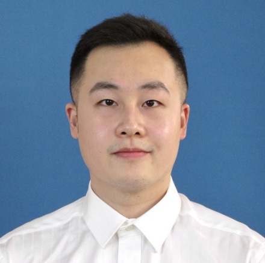

Chao GU (谷超)
|  | Ph.D., |
Biography
I was born in Xi'an, China.
I received the B. Eng. degree in Automation from North China Electric Power University, in 2014.
I received the M.E. degree in Control Engineering from Xidian University, in 2017.
I received the Ph.D degree in cotutorship between Xidian University (in Control Theory and Control Engineering) and University of Cagliari (in Electronics and Computer Engineering), in 2022, co-supervised by Prof. Zhiwu Li (Xidian University) and Prof. Alessandro Giua (University of Cagliari).
I am a member of Institute of Electrical and Electronics Engineers (IEEE), IEEE Control Systems Society Technical Community on Discrete Event Systems, and Chinese Association of Automation.
Research Interests
My research interests include:
Petri Net Theory and Its Applications
Discrete Event Systems
Supervisory Control Theory
Security Problems in Cyber-Physical Systems